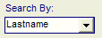
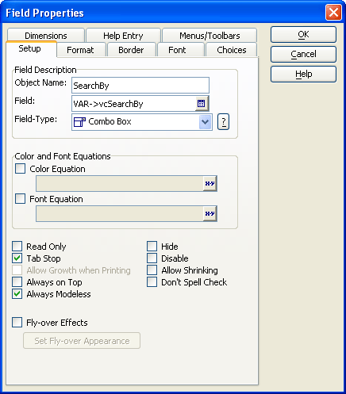

Filtering a Browse with a Combo Box Selection
This topic refers to the AlphaSports sample database provided with Alpha Anywhere.
Overview
The Search By combo box sets the value of the vcSearchBy variable. This variable selects a field from the Customer table. Selecting an entry in the Search By combo box:

Sets the column title of the Browse1 embedded browse.
Select the field that the Browse1 displays.
Sorts all matching records (defined by the MULSTBTN1 multi-state button) from the Customer table. The Customer Information form displays the first record of the selection.
Procedure: Configuring the SearchBy Combo Box
The following procedure assumes that the developer has opened the form in the Form Editor. Follow these instructions to create a Combo box similar to SearchBy :
Place a Type-In control on the form.
Right click the control and select Properties....
In the Field list select the appropriate field in your table or variable on your form. In this case the user selection is stored into the vcSearchBy variable of the Customer Information form.

SearchBy on
The on
sets the title of the Browse1 list
retrieves a new sorted list of non-null values for Browse1
resets the MULSTBTN1 multi-state (A to Z) button at the bottom of the screen
'Set the column heading of the Browse1 list to be the same as the entry selected in the combo box.
|
dim tbl as P
topparent:Browse1:Lastname.Object.Column_title = searchby.text |
Specify the current table (Customer).
|
tbl = table.current() |
Now sort table by the field that we will retrieve. Filter the records returned to those not equal to NULL.
|
tbl.order(searchby.text, searchby.text + " <> ''") |
Reset the value of the MULSTBTN1 multi-state button. Chose "1" because it is not in the set A-Z and thereby de-selects any previously selected letter.
|
mulstbtn1.text = "1" |
Refresh the display.
|
browse1.refresh() |
See Also